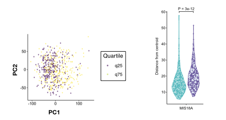
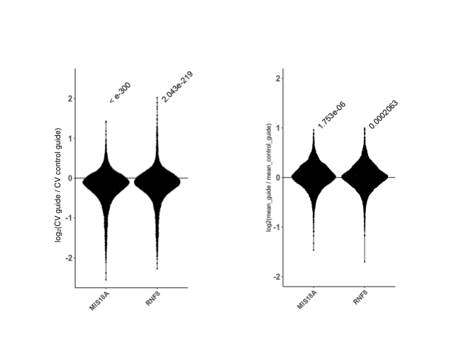
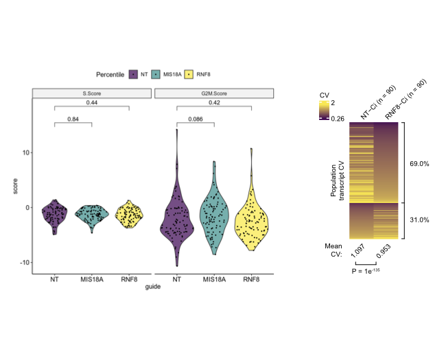
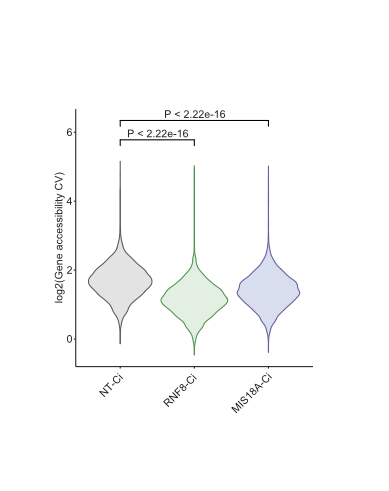

Quantifying transcriptional heterogeneity
txnheterogeneity.RmdCode is shown but not executed — every function here needs a real dataset (a Seurat object, an expression matrix, or 10x fragment files), none of which is small enough to ship inside the package.
What this package measures
Most differential analysis compares means: is this gene higher in condition A than B? This package compares dispersion: are the cells or samples in condition A more variable than those in condition B?
That distinction matters in cancer, where intratumoral heterogeneity predicts poor outcome, and where the interesting question is often not which genes moved but whether the population became more or less uniform.
Three assays, one idea, one interface:
| Assay | Metric | Entry point |
|---|---|---|
| Bulk RNA-seq | Gene-level coefficient of variation; also dispersion in PC space | bulk_het() |
| scRNA-seq | Transcriptome-wide CV per condition | sc_het() |
| scATAC-seq | CV over called peaks, via ArchR | scATAC_het() |
Each *_het() function has a matching
plot_*_het().
Installation
The dependency set is heavy — ArchR, a BSgenome, and several Bioconductor packages. A conda environment is strongly recommended; one is shipped with the package:
Then, from R:
if (!require("devtools")) install.packages("devtools")
devtools::install_github("ssobt/txnheterogeneity")If dependencies do not resolve automatically, install into a dedicated library:
devtools::install_github("ssobt/txnheterogeneity",
upgrade = "never",
lib = "/path/to/txnheterogeneity_lib/")Bulk RNA-seq
bulk_het() works two ways. Either you already know your
groups:
.libPaths("/path/to/txnheterogeneity_lib/")
library(txnheterogeneity)
# input_mtx: genes in rows, samples in columns
set.seed(123) # the background distribution is sampled
samples <- sample(colnames(input_mtx), 200)
out <- bulk_het(data = input_mtx,
g1 = samples[1:100],
g2 = samples[101:200],
cores = 1)…or you want samples stratified by how strongly they express candidate genes — the mode used to screen TCGA for regulators of heterogeneity:
set.seed(123)
out <- bulk_het(data = input_mtx,
quant = 0.75, # top 25% vs bottom 25%
stratifiers = rownames(input_mtx)[1:10],
cores = 10)Plot either the PC-space spread or the pairwise distance distribution:
plot_bulk_het(out, components_to_plot = c(1, 2),
plot_type = "PC scatter", stratifier_gene = "MIS18A") +
ggplot2::scale_color_viridis_d()
plot_bulk_het(out, plot_type = "distance violin", stratifier_gene = "MIS18A")
Single-cell RNA-seq
Requires a Seurat object with a metadata column identifying each cell’s sample or guide.
sc_out <- sc_het(
seurat_obj = CRISPRa_seurat,
meta_data_sample_column = "guide",
sample_names = c("NT", "RNF8", "MIS18A"),
control_sample_name = "NT",
cutoff = 0.1, # gene retention threshold
sample_cells_per_guide_cutoff = 50, # equalize cells per condition
seed = 42
)Two arguments deserve attention, because they are what keep the result from being an artifact:
-
cutoffsets the minimum detection rate for a gene to be counted. CV is unstable for genes that are mostly zero, and without a floor the metric ends up reporting dropout rather than biology.gene_retention_pct()shows how many genes survive a given cutoff. -
sample_cells_per_guide_cutoffdownsamples every condition to the same number of cells. Dispersion estimates scale with sample size, so unequal cell counts alone will produce an apparent heterogeneity difference.
plot_sc_het(sc_out, plot_type = "CV violin")
plot_sc_het(sc_out, plot_type = "mean violin", sample_names = c("RNF8-Ci", "MIS18A-Ci"))
plot_sc_het(sc_out, plot_type = "cell cycle") # is the shift just cycling?
plot_sc_het(sc_out, plot_type = "heatmap", sample_names = "RNF8-Ci")

The "cell cycle" view is a control, not decoration:
proliferating cells are transcriptionally more variable, so a
heterogeneity shift that is really a shift in cycling fraction should be
visible here before it is interpreted as anything else.
Single-cell ATAC-seq
Takes fragment files from Cell Ranger ATAC and calls peaks through ArchR.
# Combine replicates by mapping each sample name to a merged label
rep_map <- list(
c("NTCi-1", "NTCi-2", "RNF8-Ci-1", "RNF8-Ci-2", "MIS18A-Ci-1", "MIS18A-Ci-2"),
c("NTCi", "NTCi", "RNF8-Ci", "RNF8-Ci", "MIS18A-Ci", "MIS18A-Ci")
)
out <- scATAC_het(
scATAC_fragment_files = paste0(folder, "/", file_names),
sample_names = names(file_names),
replicate_map = rep_map,
samples_to_analyze = c("NTCi", "RNF8-Ci", "MIS18A-Ci"),
control_sample_name = "NTCi",
savepath = savep,
threads = 35,
genome = "hg38",
TSS_bed_path = "/path/to/GRCh38_transcriptsOnly.tss.bed",
macs2_path = "/path/to/envs/archr/bin/macs2"
)
plot_scATAC_het(out, plot_type = "CV between samples",
sample_names = c("RNF8-Ci", "MIS18A-Ci"))
Pass macs2_path explicitly. ArchR searches the system
for MACS2 and picks the wrong copy when several exist, which is common
once you have more than one conda environment.
Interpreting a heterogeneity change
Dispersion metrics are easy to fool. Before concluding that a perturbation changed heterogeneity, rule out the alternatives:
-
Depth and cell number — equalized via
sample_cells_per_guide_cutoff. -
Detection rate — controlled by
cutoff; check withgene_retention_pct(). -
Cell cycle — inspect the
"cell cycle"plot. -
Mean–variance coupling — CV falls as mean
expression rises, so compare the
"CV violin"against the"mean violin". A CV shift with no mean shift is the interesting case.
Significance throughout comes from sampled background distributions rather than a parametric assumption, because gene-level CV is not well behaved.
Related work
This package underpins:
Woo BJ*, Sobti S*, Suh JM, Yousefi H, Garcia K, Zhou S, Borah A, Goodarzi H. Systematic identification of chromatin organizers as tuners of intratumoral heterogeneity. bioRxiv 2026. doi:10.64898/2026.04.18.719392
For pathway shifts in Perturb-seq data, see VariPath.